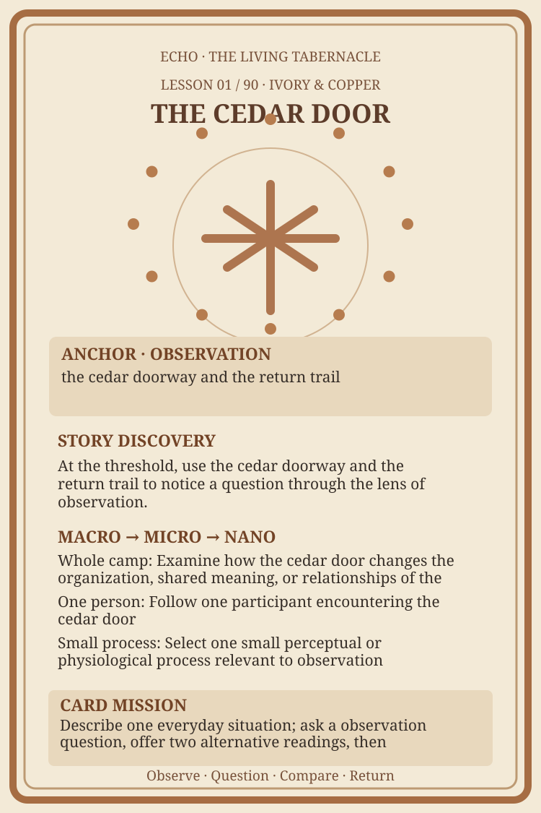
01. The Cedar Door
Macro: Examine how the cedar door changes the organization, shared meaning, or relationships of the whole encampment.
Micro: Follow one participant encountering the cedar door; distinguish observed behavior from inferred feeling.
Nano: Select one small perceptual or physiological process relevant to observation; label scientific claims separately from the ECHO analogy.
Evidence: Record what was directly observed, what was inferred, and what additional evidence could change the interpretation of the cedar door.
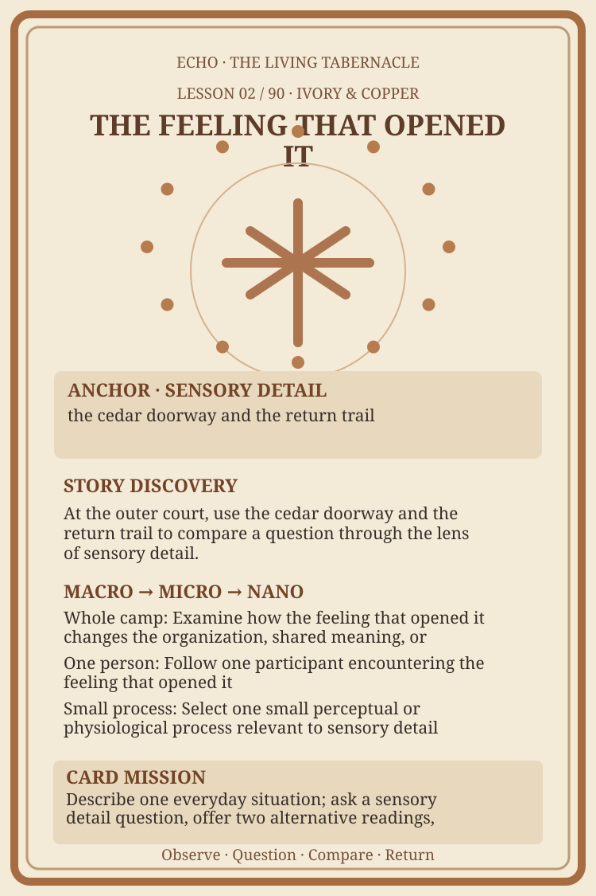
02. The Feeling That Opened It
Macro: Examine how the feeling that opened it changes the organization, shared meaning, or relationships of the whole encampment.
Micro: Follow one participant encountering the feeling that opened it; distinguish observed behavior from inferred feeling.
Nano: Select one small perceptual or physiological process relevant to sensory detail; label scientific claims separately from the ECHO analogy.
Evidence: Record what was directly observed, what was inferred, and what additional evidence could change the interpretation of the feeling that opened it.
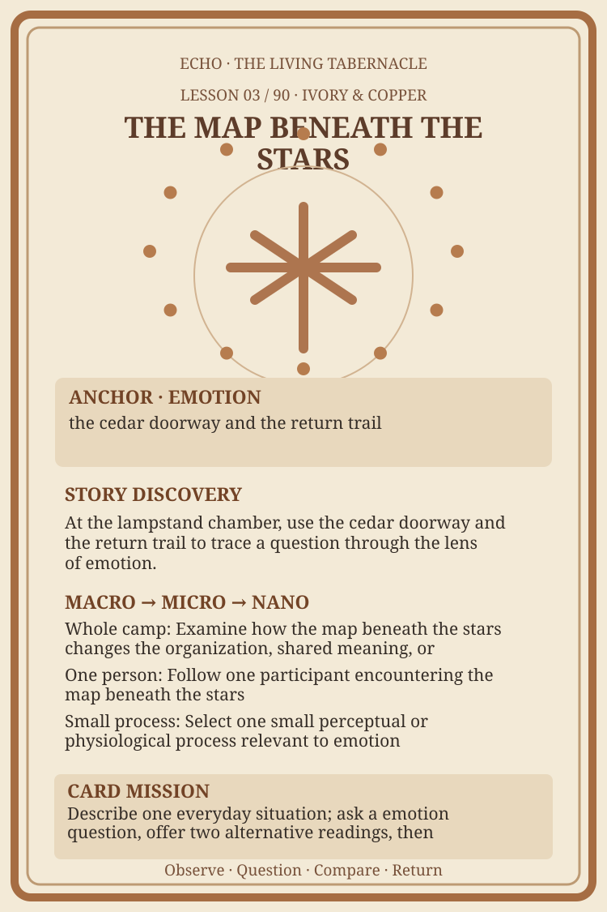
03. The Map Beneath the Stars
Macro: Examine how the map beneath the stars changes the organization, shared meaning, or relationships of the whole encampment.
Micro: Follow one participant encountering the map beneath the stars; distinguish observed behavior from inferred feeling.
Nano: Select one small perceptual or physiological process relevant to emotion; label scientific claims separately from the ECHO analogy.
Evidence: Record what was directly observed, what was inferred, and what additional evidence could change the interpretation of the map beneath the stars.
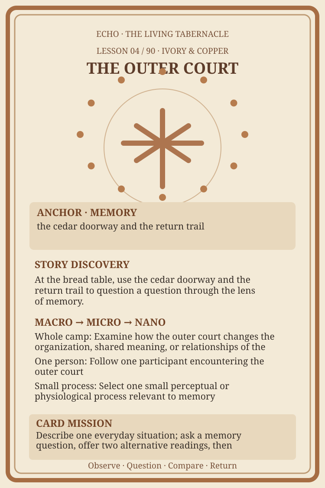
04. The Outer Court
Macro: Examine how the outer court changes the organization, shared meaning, or relationships of the whole encampment.
Micro: Follow one participant encountering the outer court; distinguish observed behavior from inferred feeling.
Nano: Select one small perceptual or physiological process relevant to memory; label scientific claims separately from the ECHO analogy.
Evidence: Record what was directly observed, what was inferred, and what additional evidence could change the interpretation of the outer court.
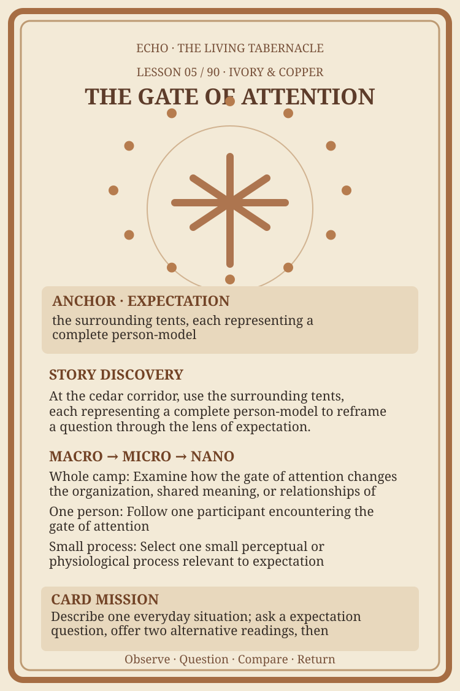
05. The Gate of Attention
Macro: Examine how the gate of attention changes the organization, shared meaning, or relationships of the whole encampment.
Micro: Follow one participant encountering the gate of attention; distinguish observed behavior from inferred feeling.
Nano: Select one small perceptual or physiological process relevant to expectation; label scientific claims separately from the ECHO analogy.
Evidence: Record what was directly observed, what was inferred, and what additional evidence could change the interpretation of the gate of attention.
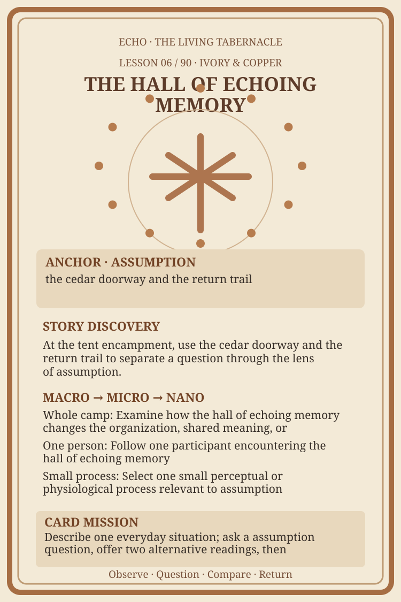
06. The Hall of Echoing Memory
Macro: Examine how the hall of echoing memory changes the organization, shared meaning, or relationships of the whole encampment.
Micro: Follow one participant encountering the hall of echoing memory; distinguish observed behavior from inferred feeling.
Nano: Select one small perceptual or physiological process relevant to assumption; label scientific claims separately from the ECHO analogy.
Evidence: Record what was directly observed, what was inferred, and what additional evidence could change the interpretation of the hall of echoing memory.
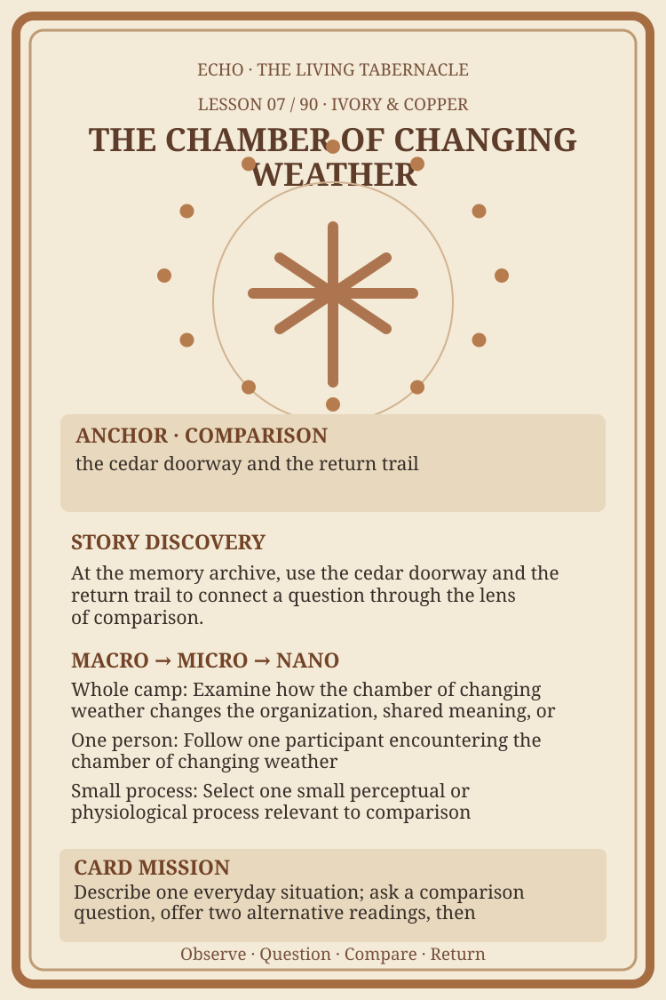
07. The Chamber of Changing Weather
Macro: Examine how the chamber of changing weather changes the organization, shared meaning, or relationships of the whole encampment.
Micro: Follow one participant encountering the chamber of changing weather; distinguish observed behavior from inferred feeling.
Nano: Select one small perceptual or physiological process relevant to comparison; label scientific claims separately from the ECHO analogy.
Evidence: Record what was directly observed, what was inferred, and what additional evidence could change the interpretation of the chamber of changing weather.
08. The Twelve Lamps
Macro: Examine how the twelve lamps changes the organization, shared meaning, or relationships of the whole encampment.
Micro: Follow one participant encountering the twelve lamps; distinguish observed behavior from inferred feeling.
Nano: Select one small perceptual or physiological process relevant to contrast; label scientific claims separately from the ECHO analogy.
Evidence: Record what was directly observed, what was inferred, and what additional evidence could change the interpretation of the twelve lamps.
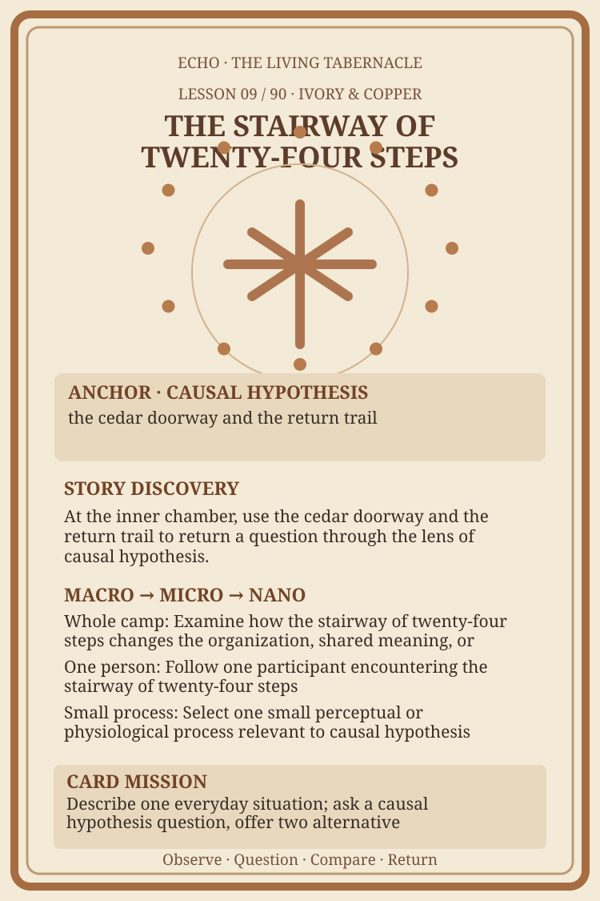
09. The Stairway of Twenty-Four Steps
Macro: Examine how the stairway of twenty-four steps changes the organization, shared meaning, or relationships of the whole encampment.
Micro: Follow one participant encountering the stairway of twenty-four steps; distinguish observed behavior from inferred feeling.
Nano: Select one small perceptual or physiological process relevant to causal hypothesis; label scientific claims separately from the ECHO analogy.
Evidence: Record what was directly observed, what was inferred, and what additional evidence could change the interpretation of the stairway of twenty-four steps.
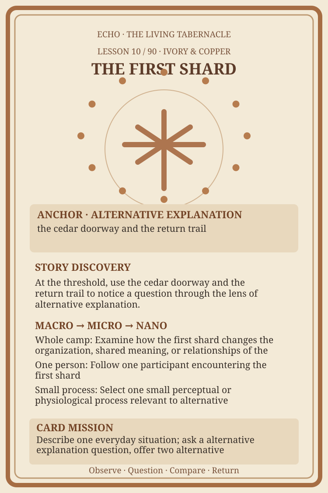
10. The First Shard
Macro: Examine how the first shard changes the organization, shared meaning, or relationships of the whole encampment.
Micro: Follow one participant encountering the first shard; distinguish observed behavior from inferred feeling.
Nano: Select one small perceptual or physiological process relevant to alternative explanation; label scientific claims separately from the ECHO analogy.
Evidence: Record what was directly observed, what was inferred, and what additional evidence could change the interpretation of the first shard.
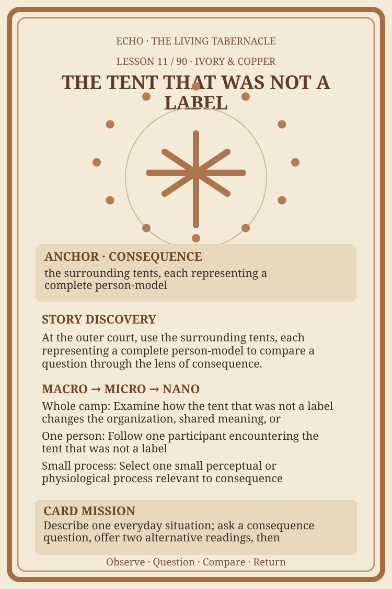
11. The Tent That Was Not a Label
Macro: Examine how the tent that was not a label changes the organization, shared meaning, or relationships of the whole encampment.
Micro: Follow one participant encountering the tent that was not a label; distinguish observed behavior from inferred feeling.
Nano: Select one small perceptual or physiological process relevant to consequence; label scientific claims separately from the ECHO analogy.
Evidence: Record what was directly observed, what was inferred, and what additional evidence could change the interpretation of the tent that was not a label.
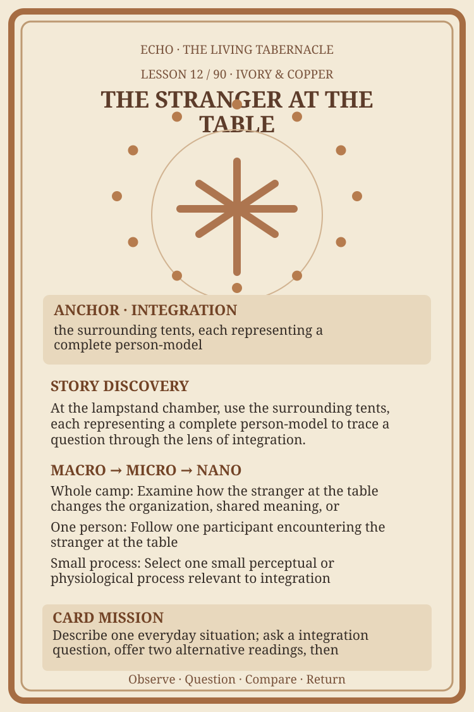
12. The Stranger at the Table
Macro: Examine how the stranger at the table changes the organization, shared meaning, or relationships of the whole encampment.
Micro: Follow one participant encountering the stranger at the table; distinguish observed behavior from inferred feeling.
Nano: Select one small perceptual or physiological process relevant to integration; label scientific claims separately from the ECHO analogy.
Evidence: Record what was directly observed, what was inferred, and what additional evidence could change the interpretation of the stranger at the table.
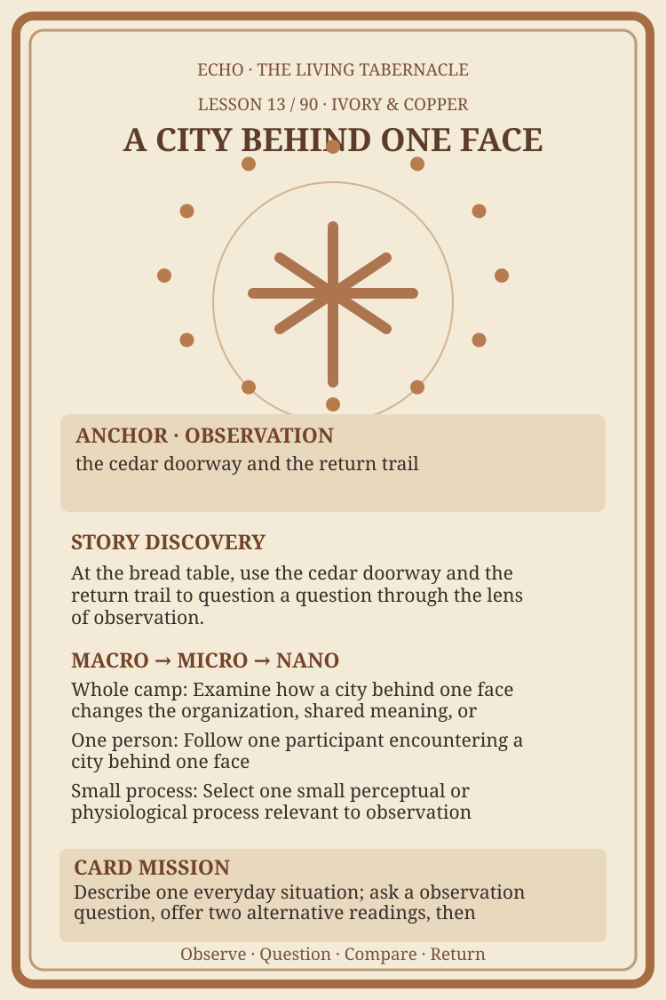
13. A City Behind One Face
Macro: Examine how a city behind one face changes the organization, shared meaning, or relationships of the whole encampment.
Micro: Follow one participant encountering a city behind one face; distinguish observed behavior from inferred feeling.
Nano: Select one small perceptual or physiological process relevant to observation; label scientific claims separately from the ECHO analogy.
Evidence: Record what was directly observed, what was inferred, and what additional evidence could change the interpretation of a city behind one face.
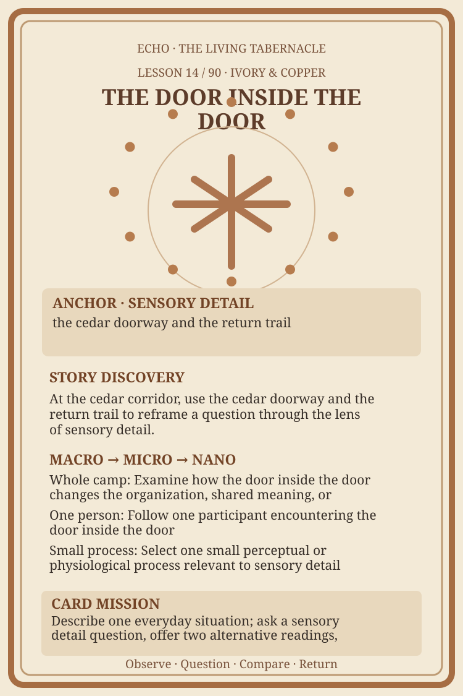
14. The Door Inside the Door
Macro: Examine how the door inside the door changes the organization, shared meaning, or relationships of the whole encampment.
Micro: Follow one participant encountering the door inside the door; distinguish observed behavior from inferred feeling.
Nano: Select one small perceptual or physiological process relevant to sensory detail; label scientific claims separately from the ECHO analogy.
Evidence: Record what was directly observed, what was inferred, and what additional evidence could change the interpretation of the door inside the door.
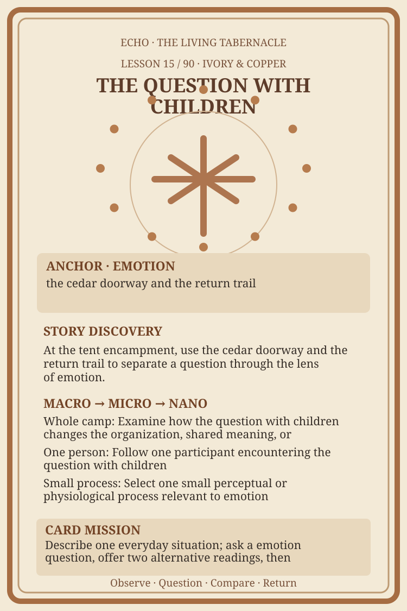
15. The Question with Children
Macro: Examine how the question with children changes the organization, shared meaning, or relationships of the whole encampment.
Micro: Follow one participant encountering the question with children; distinguish observed behavior from inferred feeling.
Nano: Select one small perceptual or physiological process relevant to emotion; label scientific claims separately from the ECHO analogy.
Evidence: Record what was directly observed, what was inferred, and what additional evidence could change the interpretation of the question with children.
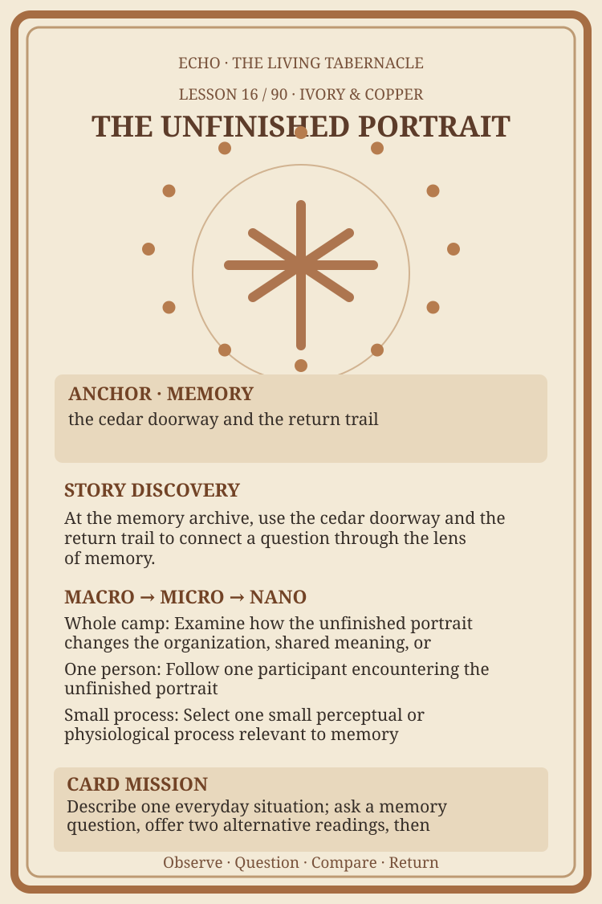
16. The Unfinished Portrait
Macro: Examine how the unfinished portrait changes the organization, shared meaning, or relationships of the whole encampment.
Micro: Follow one participant encountering the unfinished portrait; distinguish observed behavior from inferred feeling.
Nano: Select one small perceptual or physiological process relevant to memory; label scientific claims separately from the ECHO analogy.
Evidence: Record what was directly observed, what was inferred, and what additional evidence could change the interpretation of the unfinished portrait.
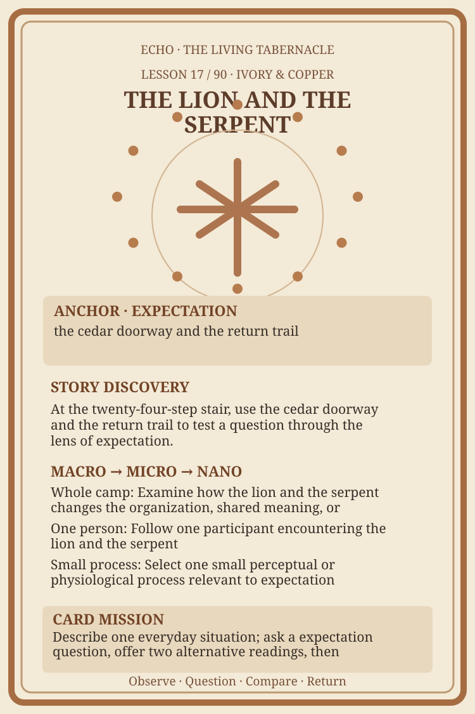
17. The Lion and the Serpent
Macro: Examine how the lion and the serpent changes the organization, shared meaning, or relationships of the whole encampment.
Micro: Follow one participant encountering the lion and the serpent; distinguish observed behavior from inferred feeling.
Nano: Select one small perceptual or physiological process relevant to expectation; label scientific claims separately from the ECHO analogy.
Evidence: Record what was directly observed, what was inferred, and what additional evidence could change the interpretation of the lion and the serpent.
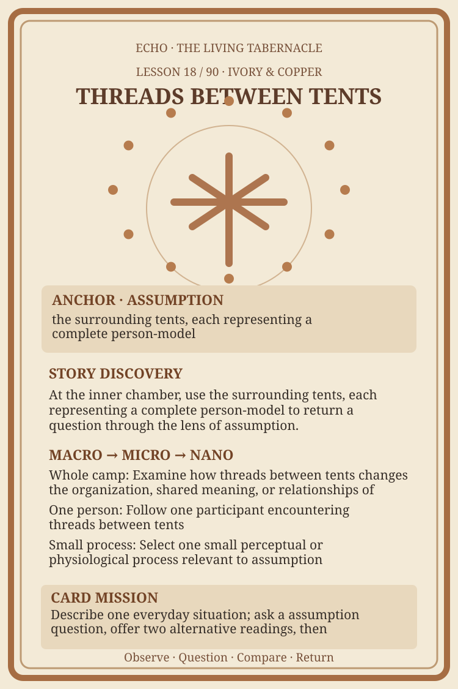
18. Threads Between Tents
Macro: Examine how threads between tents changes the organization, shared meaning, or relationships of the whole encampment.
Micro: Follow one participant encountering threads between tents; distinguish observed behavior from inferred feeling.
Nano: Select one small perceptual or physiological process relevant to assumption; label scientific claims separately from the ECHO analogy.
Evidence: Record what was directly observed, what was inferred, and what additional evidence could change the interpretation of threads between tents.
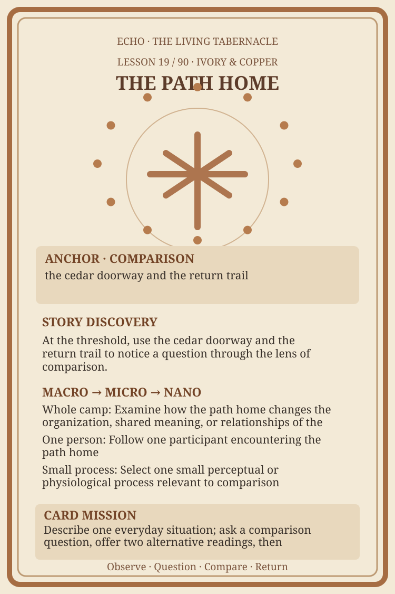
19. The Path Home
Macro: Examine how the path home changes the organization, shared meaning, or relationships of the whole encampment.
Micro: Follow one participant encountering the path home; distinguish observed behavior from inferred feeling.
Nano: Select one small perceptual or physiological process relevant to comparison; label scientific claims separately from the ECHO analogy.
Evidence: Record what was directly observed, what was inferred, and what additional evidence could change the interpretation of the path home.
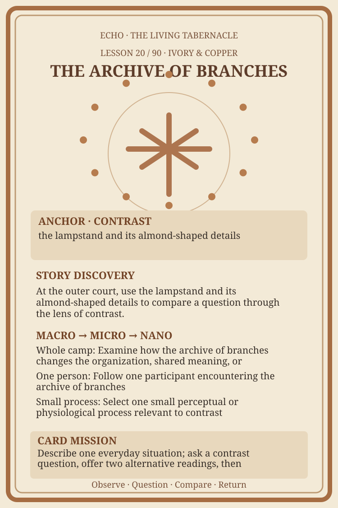
20. The Archive of Branches
Macro: Examine how the archive of branches changes the organization, shared meaning, or relationships of the whole encampment.
Micro: Follow one participant encountering the archive of branches; distinguish observed behavior from inferred feeling.
Nano: Select one small perceptual or physiological process relevant to contrast; label scientific claims separately from the ECHO analogy.
Evidence: Record what was directly observed, what was inferred, and what additional evidence could change the interpretation of the archive of branches.
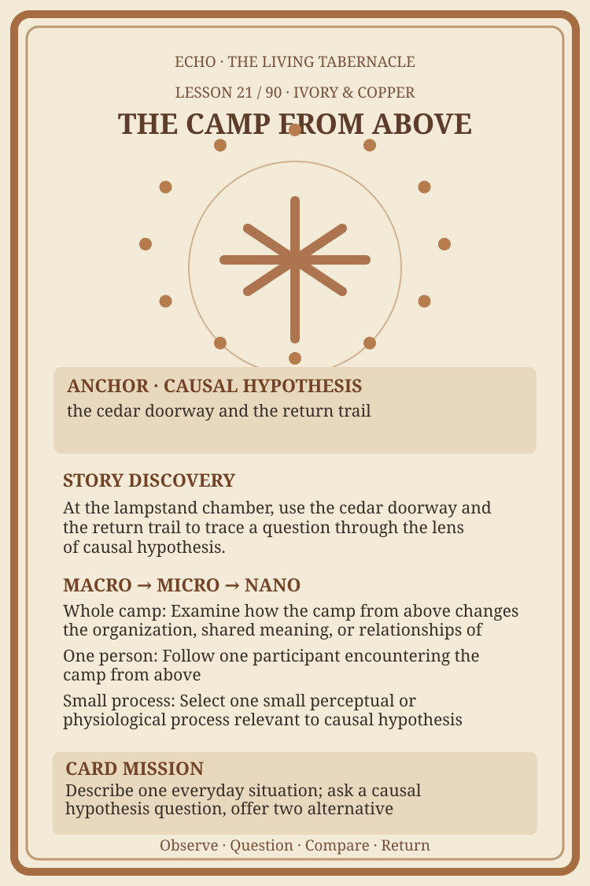
21. The Camp from Above
Macro: Examine how the camp from above changes the organization, shared meaning, or relationships of the whole encampment.
Micro: Follow one participant encountering the camp from above; distinguish observed behavior from inferred feeling.
Nano: Select one small perceptual or physiological process relevant to causal hypothesis; label scientific claims separately from the ECHO analogy.
Evidence: Record what was directly observed, what was inferred, and what additional evidence could change the interpretation of the camp from above.
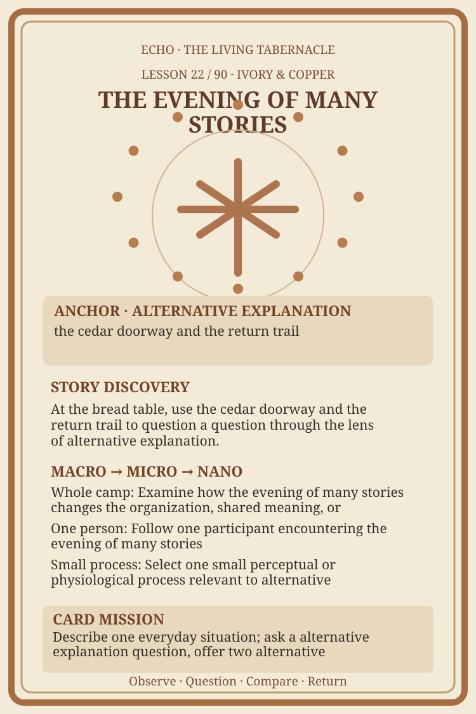
22. The Evening of Many Stories
Macro: Examine how the evening of many stories changes the organization, shared meaning, or relationships of the whole encampment.
Micro: Follow one participant encountering the evening of many stories; distinguish observed behavior from inferred feeling.
Nano: Select one small perceptual or physiological process relevant to alternative explanation; label scientific claims separately from the ECHO analogy.
Evidence: Record what was directly observed, what was inferred, and what additional evidence could change the interpretation of the evening of many stories.
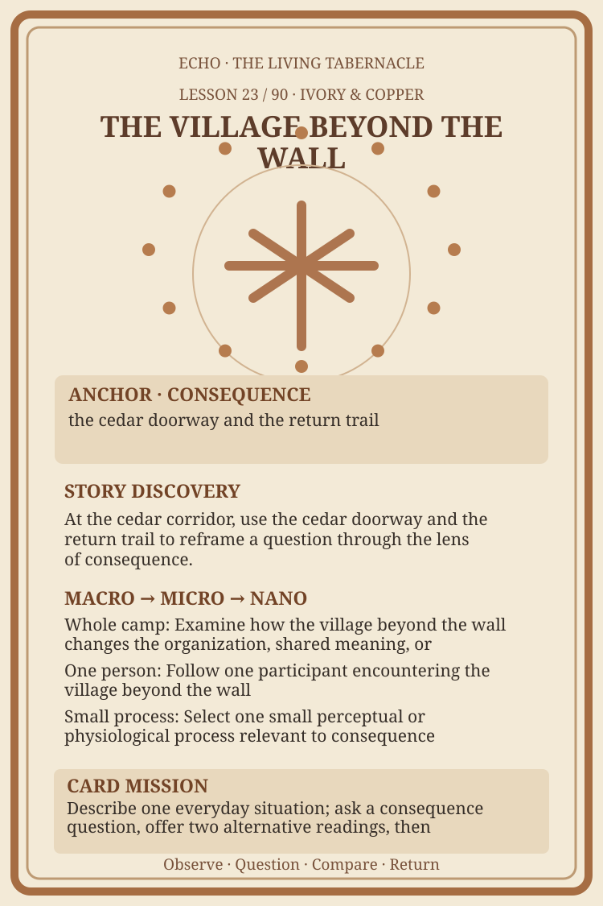
23. The Village Beyond the Wall
Macro: Examine how the village beyond the wall changes the organization, shared meaning, or relationships of the whole encampment.
Micro: Follow one participant encountering the village beyond the wall; distinguish observed behavior from inferred feeling.
Nano: Select one small perceptual or physiological process relevant to consequence; label scientific claims separately from the ECHO analogy.
Evidence: Record what was directly observed, what was inferred, and what additional evidence could change the interpretation of the village beyond the wall.
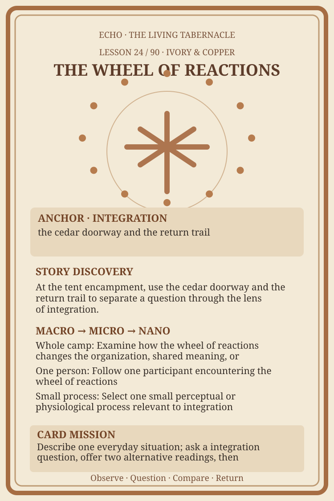
24. The Wheel of Reactions
Macro: Examine how the wheel of reactions changes the organization, shared meaning, or relationships of the whole encampment.
Micro: Follow one participant encountering the wheel of reactions; distinguish observed behavior from inferred feeling.
Nano: Select one small perceptual or physiological process relevant to integration; label scientific claims separately from the ECHO analogy.
Evidence: Record what was directly observed, what was inferred, and what additional evidence could change the interpretation of the wheel of reactions.
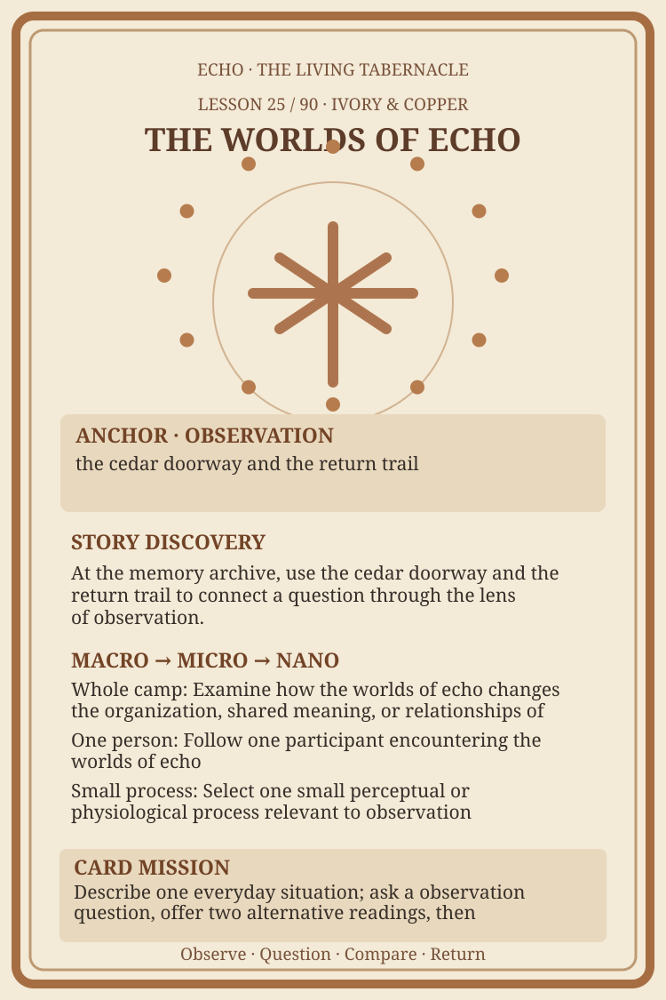
25. The Worlds of ECHO
Macro: Examine how the worlds of echo changes the organization, shared meaning, or relationships of the whole encampment.
Micro: Follow one participant encountering the worlds of echo; distinguish observed behavior from inferred feeling.
Nano: Select one small perceptual or physiological process relevant to observation; label scientific claims separately from the ECHO analogy.
Evidence: Record what was directly observed, what was inferred, and what additional evidence could change the interpretation of the worlds of echo.
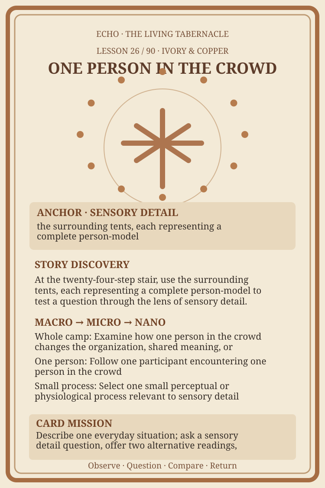
26. One Person in the Crowd
Macro: Examine how one person in the crowd changes the organization, shared meaning, or relationships of the whole encampment.
Micro: Follow one participant encountering one person in the crowd; distinguish observed behavior from inferred feeling.
Nano: Select one small perceptual or physiological process relevant to sensory detail; label scientific claims separately from the ECHO analogy.
Evidence: Record what was directly observed, what was inferred, and what additional evidence could change the interpretation of one person in the crowd.
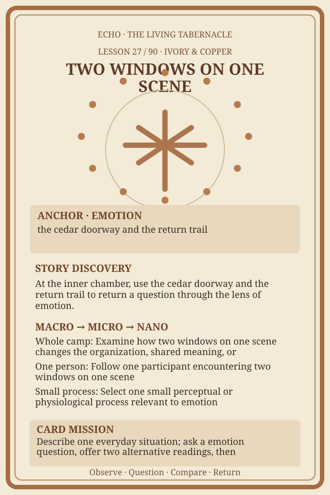
27. Two Windows on One Scene
Macro: Examine how two windows on one scene changes the organization, shared meaning, or relationships of the whole encampment.
Micro: Follow one participant encountering two windows on one scene; distinguish observed behavior from inferred feeling.
Nano: Select one small perceptual or physiological process relevant to emotion; label scientific claims separately from the ECHO analogy.
Evidence: Record what was directly observed, what was inferred, and what additional evidence could change the interpretation of two windows on one scene.
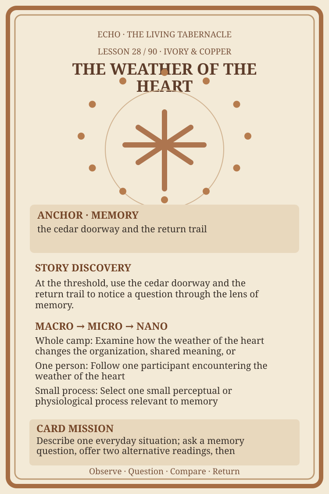
28. The Weather of the Heart
Macro: Examine how the weather of the heart changes the organization, shared meaning, or relationships of the whole encampment.
Micro: Follow one participant encountering the weather of the heart; distinguish observed behavior from inferred feeling.
Nano: Select one small perceptual or physiological process relevant to memory; label scientific claims separately from the ECHO analogy.
Evidence: Record what was directly observed, what was inferred, and what additional evidence could change the interpretation of the weather of the heart.
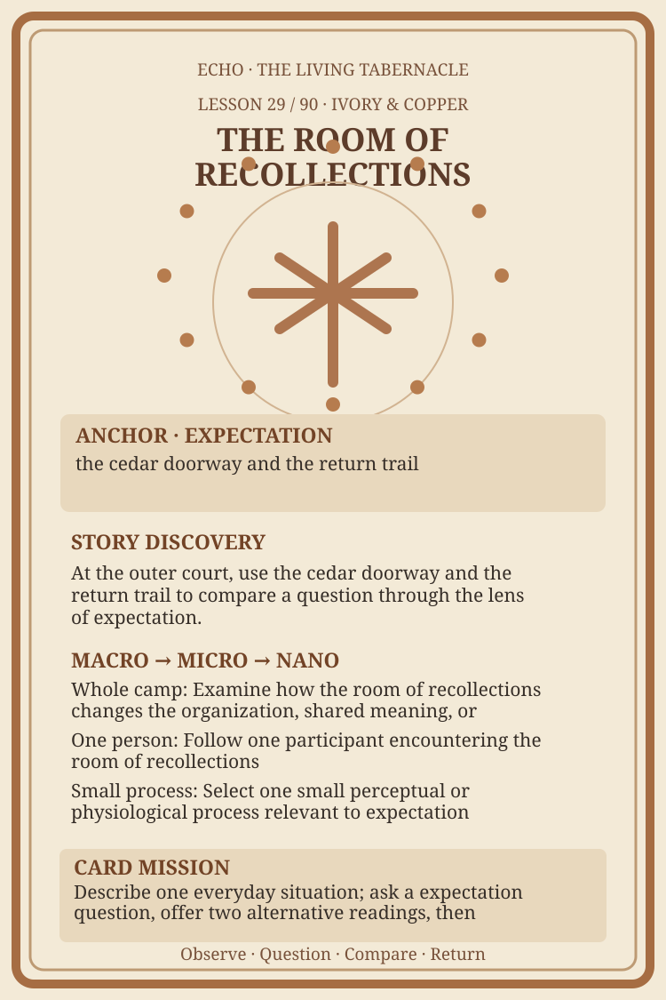
29. The Room of Recollections
Macro: Examine how the room of recollections changes the organization, shared meaning, or relationships of the whole encampment.
Micro: Follow one participant encountering the room of recollections; distinguish observed behavior from inferred feeling.
Nano: Select one small perceptual or physiological process relevant to expectation; label scientific claims separately from the ECHO analogy.
Evidence: Record what was directly observed, what was inferred, and what additional evidence could change the interpretation of the room of recollections.
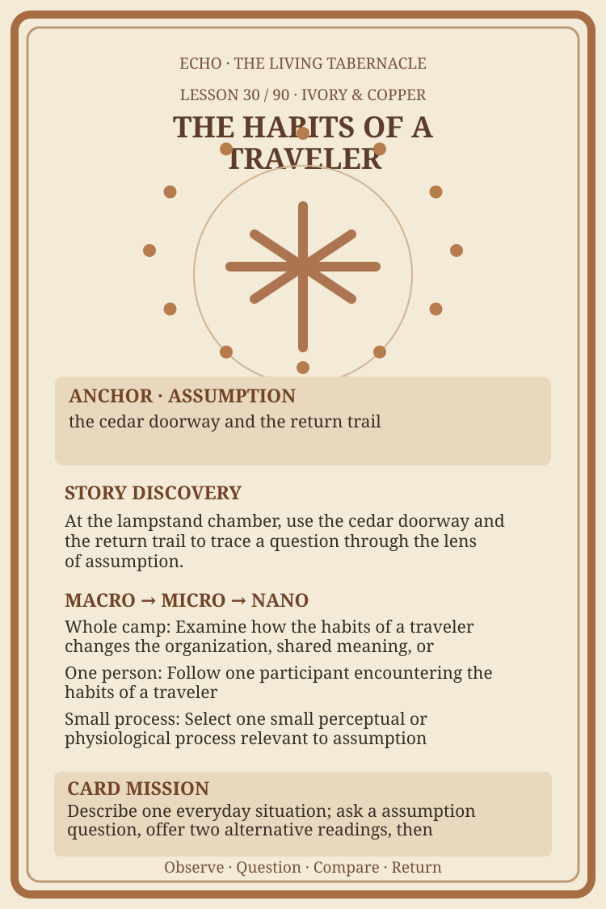
30. The Habits of a Traveler
Macro: Examine how the habits of a traveler changes the organization, shared meaning, or relationships of the whole encampment.
Micro: Follow one participant encountering the habits of a traveler; distinguish observed behavior from inferred feeling.
Nano: Select one small perceptual or physiological process relevant to assumption; label scientific claims separately from the ECHO analogy.
Evidence: Record what was directly observed, what was inferred, and what additional evidence could change the interpretation of the habits of a traveler.
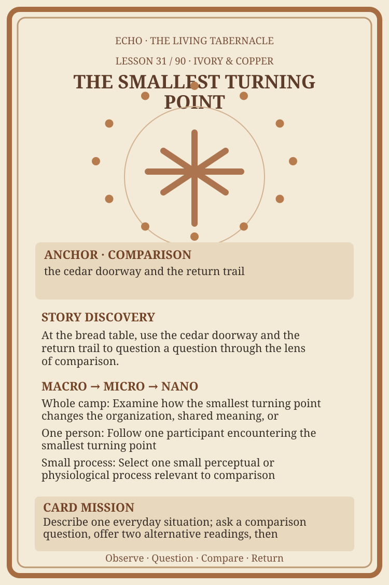
31. The Smallest Turning Point
Macro: Examine how the smallest turning point changes the organization, shared meaning, or relationships of the whole encampment.
Micro: Follow one participant encountering the smallest turning point; distinguish observed behavior from inferred feeling.
Nano: Select one small perceptual or physiological process relevant to comparison; label scientific claims separately from the ECHO analogy.
Evidence: Record what was directly observed, what was inferred, and what additional evidence could change the interpretation of the smallest turning point.
32. The Living Signal
Macro: Examine how the living signal changes the organization, shared meaning, or relationships of the whole encampment.
Micro: Follow one participant encountering the living signal; distinguish observed behavior from inferred feeling.
Nano: Select one small perceptual or physiological process relevant to contrast; label scientific claims separately from the ECHO analogy.
Evidence: Record what was directly observed, what was inferred, and what additional evidence could change the interpretation of the living signal.
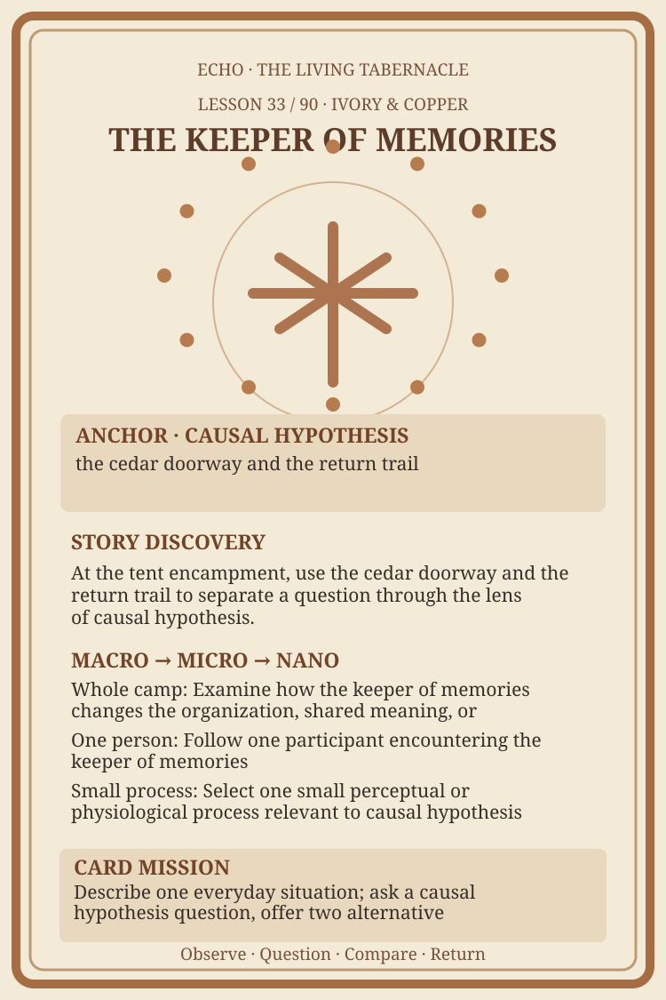
33. The Keeper of Memories
Macro: Examine how the keeper of memories changes the organization, shared meaning, or relationships of the whole encampment.
Micro: Follow one participant encountering the keeper of memories; distinguish observed behavior from inferred feeling.
Nano: Select one small perceptual or physiological process relevant to causal hypothesis; label scientific claims separately from the ECHO analogy.
Evidence: Record what was directly observed, what was inferred, and what additional evidence could change the interpretation of the keeper of memories.
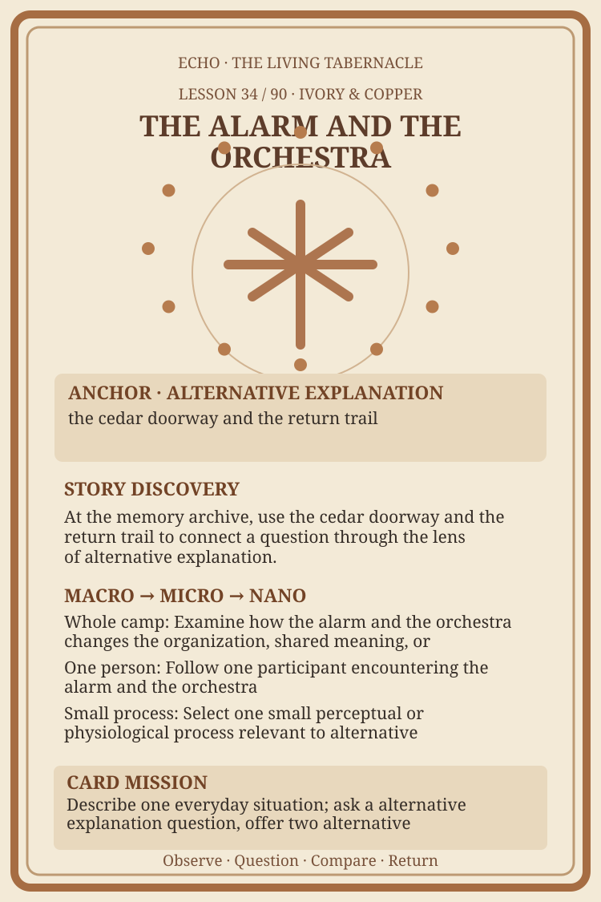
34. The Alarm and the Orchestra
Macro: Examine how the alarm and the orchestra changes the organization, shared meaning, or relationships of the whole encampment.
Micro: Follow one participant encountering the alarm and the orchestra; distinguish observed behavior from inferred feeling.
Nano: Select one small perceptual or physiological process relevant to alternative explanation; label scientific claims separately from the ECHO analogy.
Evidence: Record what was directly observed, what was inferred, and what additional evidence could change the interpretation of the alarm and the orchestra.
35. The River of Oxygen
Macro: Examine how the river of oxygen changes the organization, shared meaning, or relationships of the whole encampment.
Micro: Follow one participant encountering the river of oxygen; distinguish observed behavior from inferred feeling.
Nano: Select one small perceptual or physiological process relevant to consequence; label scientific claims separately from the ECHO analogy.
Evidence: Record what was directly observed, what was inferred, and what additional evidence could change the interpretation of the river of oxygen.
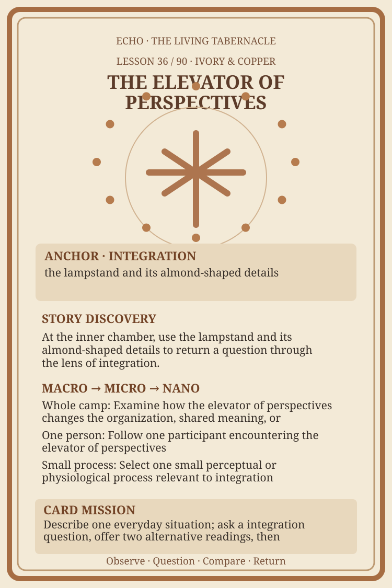
36. The Elevator of Perspectives
Macro: Examine how the elevator of perspectives changes the organization, shared meaning, or relationships of the whole encampment.
Micro: Follow one participant encountering the elevator of perspectives; distinguish observed behavior from inferred feeling.
Nano: Select one small perceptual or physiological process relevant to integration; label scientific claims separately from the ECHO analogy.
Evidence: Record what was directly observed, what was inferred, and what additional evidence could change the interpretation of the elevator of perspectives.
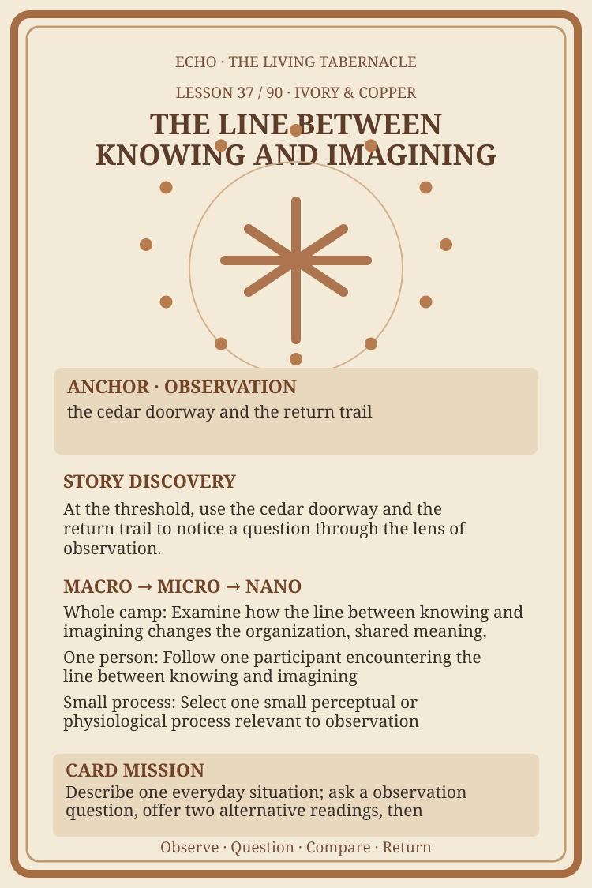
37. The Line Between Knowing and Imagining
Macro: Examine how the line between knowing and imagining changes the organization, shared meaning, or relationships of the whole encampment.
Micro: Follow one participant encountering the line between knowing and imagining; distinguish observed behavior from inferred feeling.
Nano: Select one small perceptual or physiological process relevant to observation; label scientific claims separately from the ECHO analogy.
Evidence: Record what was directly observed, what was inferred, and what additional evidence could change the interpretation of the line between knowing and imagining.
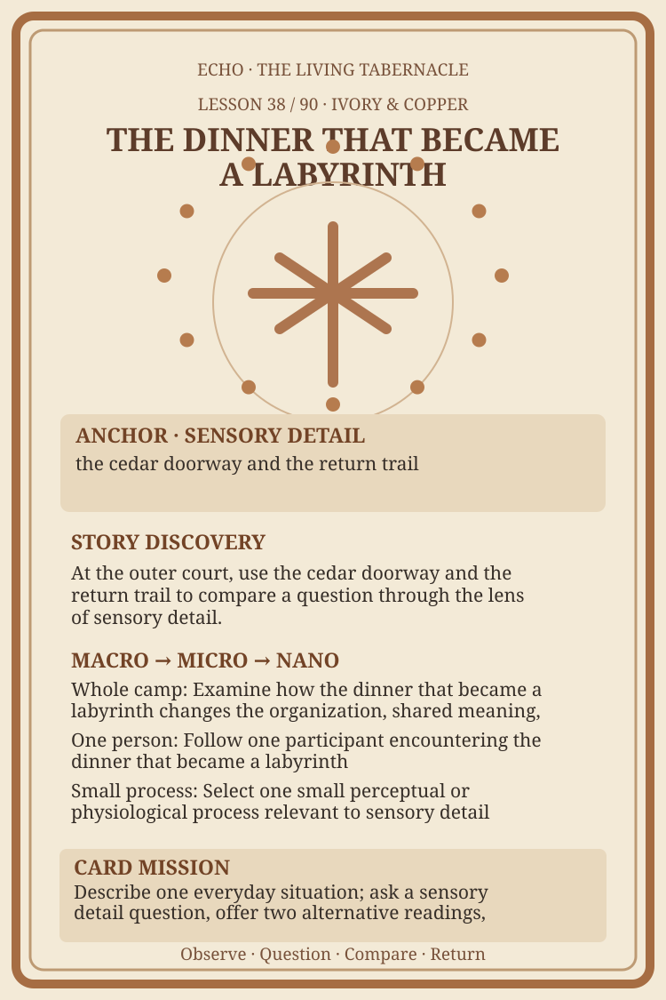
38. The Dinner That Became a Labyrinth
Macro: Examine how the dinner that became a labyrinth changes the organization, shared meaning, or relationships of the whole encampment.
Micro: Follow one participant encountering the dinner that became a labyrinth; distinguish observed behavior from inferred feeling.
Nano: Select one small perceptual or physiological process relevant to sensory detail; label scientific claims separately from the ECHO analogy.
Evidence: Record what was directly observed, what was inferred, and what additional evidence could change the interpretation of the dinner that became a labyrinth.
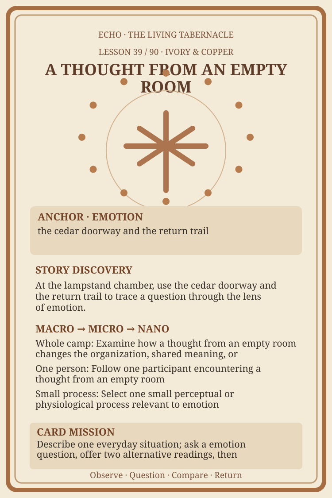
39. A Thought from an Empty Room
Macro: Examine how a thought from an empty room changes the organization, shared meaning, or relationships of the whole encampment.
Micro: Follow one participant encountering a thought from an empty room; distinguish observed behavior from inferred feeling.
Nano: Select one small perceptual or physiological process relevant to emotion; label scientific claims separately from the ECHO analogy.
Evidence: Record what was directly observed, what was inferred, and what additional evidence could change the interpretation of a thought from an empty room.
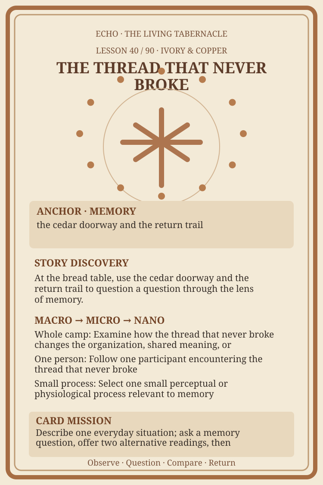
40. The Thread That Never Broke
Macro: Examine how the thread that never broke changes the organization, shared meaning, or relationships of the whole encampment.
Micro: Follow one participant encountering the thread that never broke; distinguish observed behavior from inferred feeling.
Nano: Select one small perceptual or physiological process relevant to memory; label scientific claims separately from the ECHO analogy.
Evidence: Record what was directly observed, what was inferred, and what additional evidence could change the interpretation of the thread that never broke.
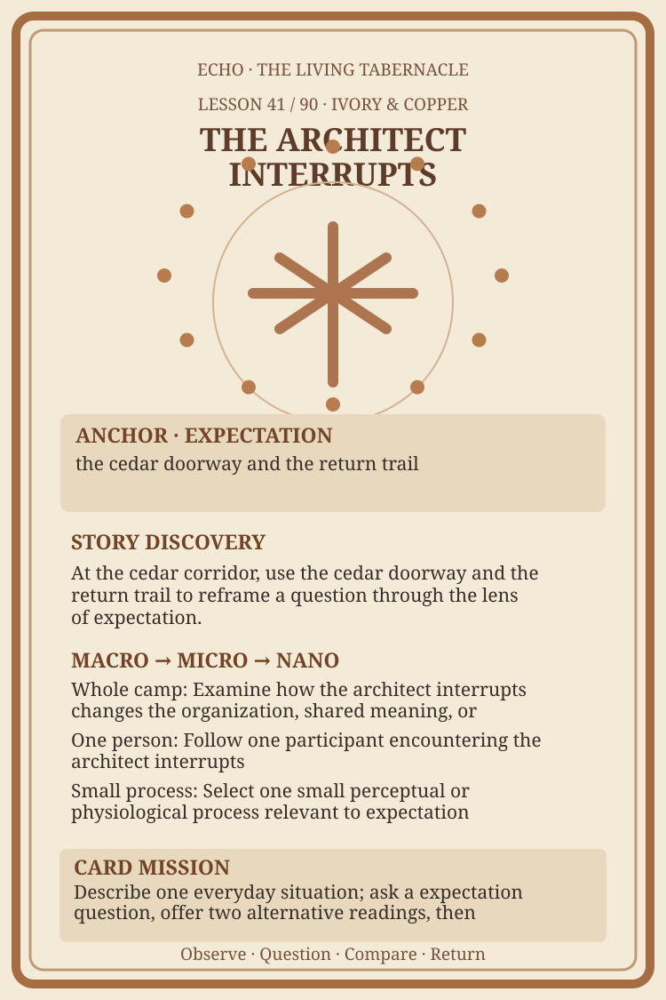
41. The Architect Interrupts
Macro: Examine how the architect interrupts changes the organization, shared meaning, or relationships of the whole encampment.
Micro: Follow one participant encountering the architect interrupts; distinguish observed behavior from inferred feeling.
Nano: Select one small perceptual or physiological process relevant to expectation; label scientific claims separately from the ECHO analogy.
Evidence: Record what was directly observed, what was inferred, and what additional evidence could change the interpretation of the architect interrupts.
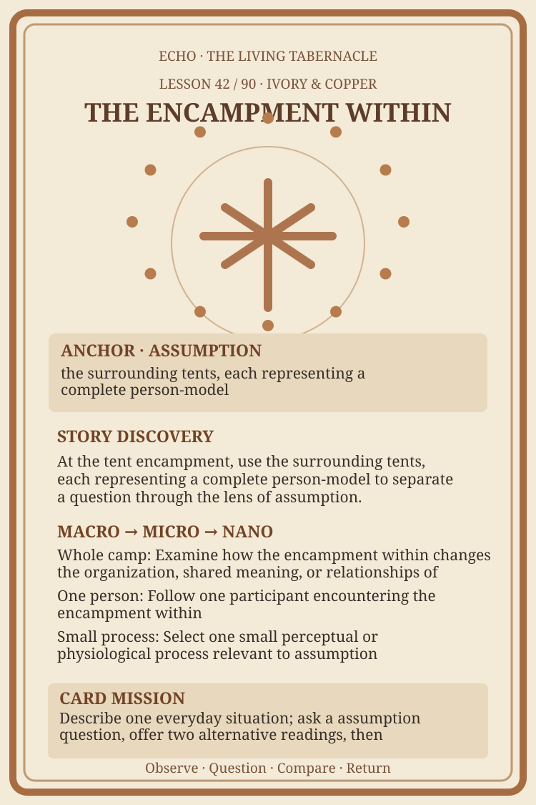
42. The Encampment Within
Macro: Examine how the encampment within changes the organization, shared meaning, or relationships of the whole encampment.
Micro: Follow one participant encountering the encampment within; distinguish observed behavior from inferred feeling.
Nano: Select one small perceptual or physiological process relevant to assumption; label scientific claims separately from the ECHO analogy.
Evidence: Record what was directly observed, what was inferred, and what additional evidence could change the interpretation of the encampment within.
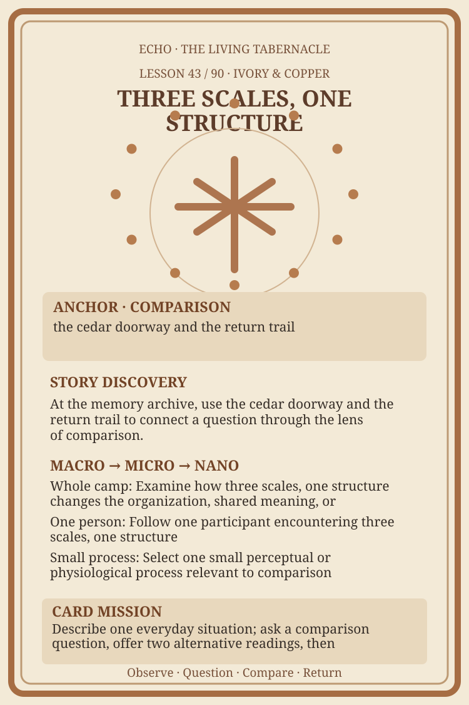
43. Three Scales, One Structure
Macro: Examine how three scales, one structure changes the organization, shared meaning, or relationships of the whole encampment.
Micro: Follow one participant encountering three scales, one structure; distinguish observed behavior from inferred feeling.
Nano: Select one small perceptual or physiological process relevant to comparison; label scientific claims separately from the ECHO analogy.
Evidence: Record what was directly observed, what was inferred, and what additional evidence could change the interpretation of three scales, one structure.
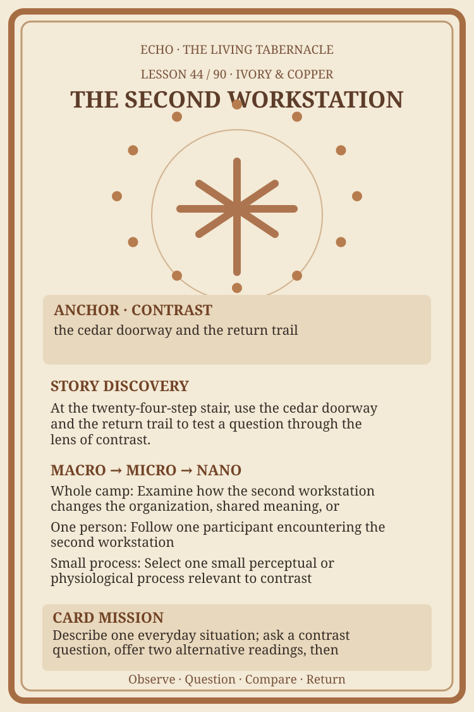
44. The Second Workstation
Macro: Examine how the second workstation changes the organization, shared meaning, or relationships of the whole encampment.
Micro: Follow one participant encountering the second workstation; distinguish observed behavior from inferred feeling.
Nano: Select one small perceptual or physiological process relevant to contrast; label scientific claims separately from the ECHO analogy.
Evidence: Record what was directly observed, what was inferred, and what additional evidence could change the interpretation of the second workstation.
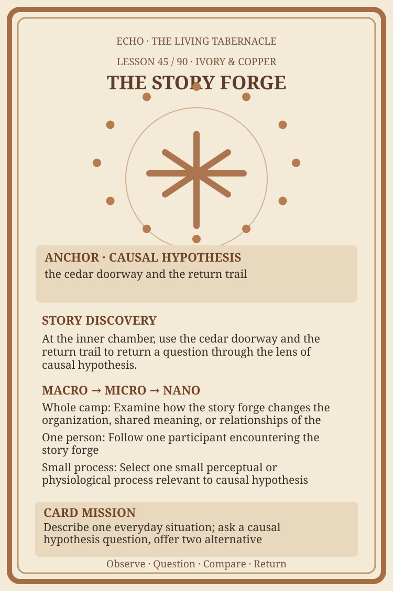
45. The Story Forge
Macro: Examine how the story forge changes the organization, shared meaning, or relationships of the whole encampment.
Micro: Follow one participant encountering the story forge; distinguish observed behavior from inferred feeling.
Nano: Select one small perceptual or physiological process relevant to causal hypothesis; label scientific claims separately from the ECHO analogy.
Evidence: Record what was directly observed, what was inferred, and what additional evidence could change the interpretation of the story forge.
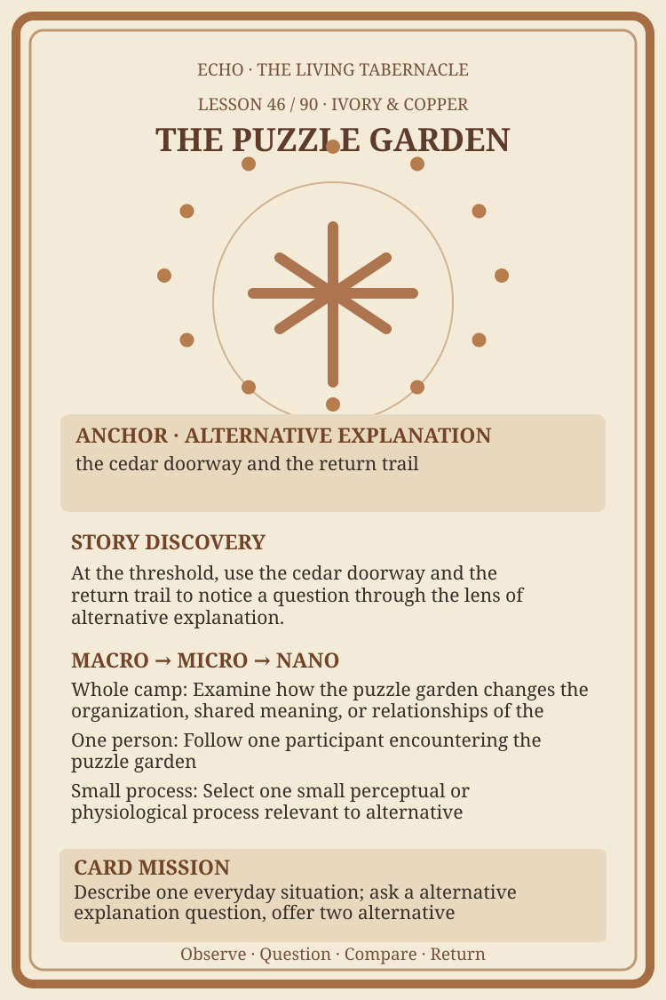
46. The Puzzle Garden
Macro: Examine how the puzzle garden changes the organization, shared meaning, or relationships of the whole encampment.
Micro: Follow one participant encountering the puzzle garden; distinguish observed behavior from inferred feeling.
Nano: Select one small perceptual or physiological process relevant to alternative explanation; label scientific claims separately from the ECHO analogy.
Evidence: Record what was directly observed, what was inferred, and what additional evidence could change the interpretation of the puzzle garden.
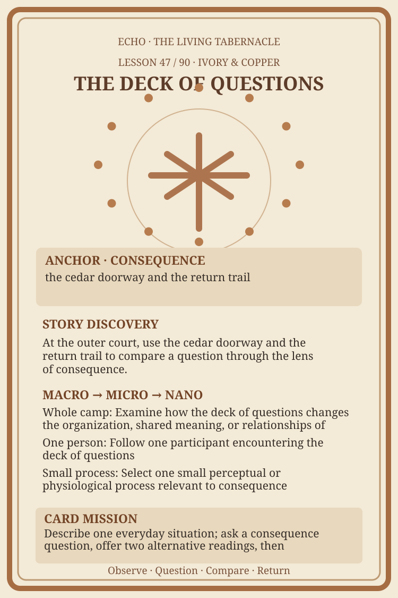
47. The Deck of Questions
Macro: Examine how the deck of questions changes the organization, shared meaning, or relationships of the whole encampment.
Micro: Follow one participant encountering the deck of questions; distinguish observed behavior from inferred feeling.
Nano: Select one small perceptual or physiological process relevant to consequence; label scientific claims separately from the ECHO analogy.
Evidence: Record what was directly observed, what was inferred, and what additional evidence could change the interpretation of the deck of questions.
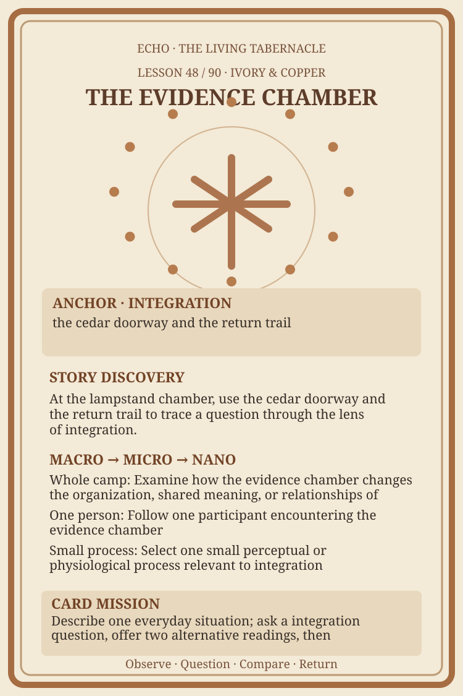
48. The Evidence Chamber
Macro: Examine how the evidence chamber changes the organization, shared meaning, or relationships of the whole encampment.
Micro: Follow one participant encountering the evidence chamber; distinguish observed behavior from inferred feeling.
Nano: Select one small perceptual or physiological process relevant to integration; label scientific claims separately from the ECHO analogy.
Evidence: Record what was directly observed, what was inferred, and what additional evidence could change the interpretation of the evidence chamber.
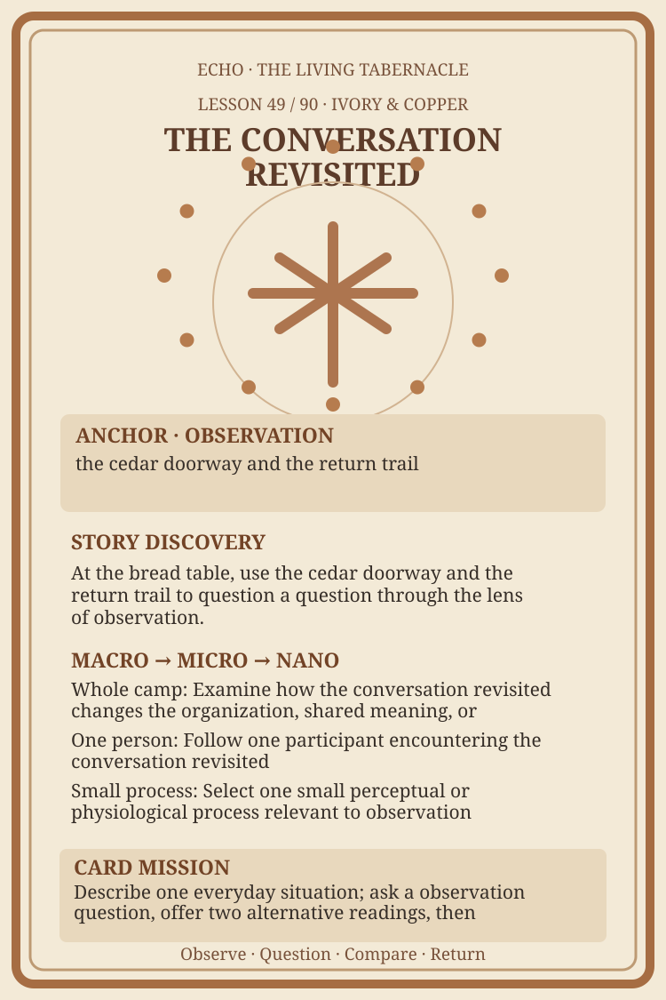
49. The Conversation Revisited
Macro: Examine how the conversation revisited changes the organization, shared meaning, or relationships of the whole encampment.
Micro: Follow one participant encountering the conversation revisited; distinguish observed behavior from inferred feeling.
Nano: Select one small perceptual or physiological process relevant to observation; label scientific claims separately from the ECHO analogy.
Evidence: Record what was directly observed, what was inferred, and what additional evidence could change the interpretation of the conversation revisited.
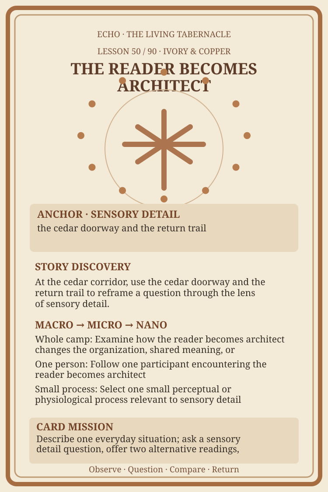
50. The Reader Becomes Architect
Macro: Examine how the reader becomes architect changes the organization, shared meaning, or relationships of the whole encampment.
Micro: Follow one participant encountering the reader becomes architect; distinguish observed behavior from inferred feeling.
Nano: Select one small perceptual or physiological process relevant to sensory detail; label scientific claims separately from the ECHO analogy.
Evidence: Record what was directly observed, what was inferred, and what additional evidence could change the interpretation of the reader becomes architect.
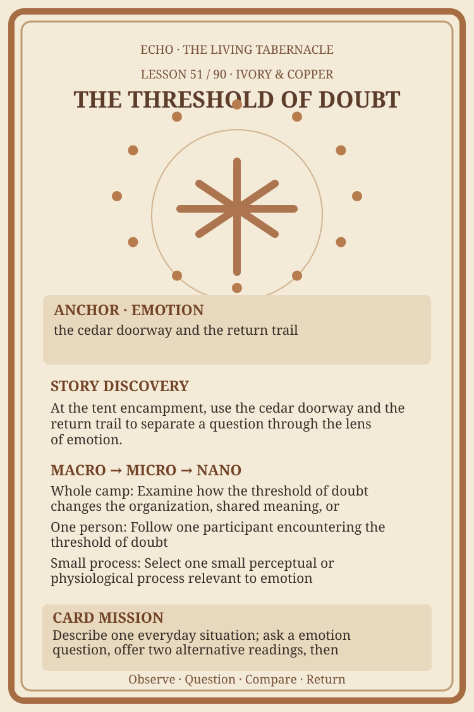
51. The Threshold of Doubt
Macro: Examine how the threshold of doubt changes the organization, shared meaning, or relationships of the whole encampment.
Micro: Follow one participant encountering the threshold of doubt; distinguish observed behavior from inferred feeling.
Nano: Select one small perceptual or physiological process relevant to emotion; label scientific claims separately from the ECHO analogy.
Evidence: Record what was directly observed, what was inferred, and what additional evidence could change the interpretation of the threshold of doubt.
52. The Second Question
Macro: Examine how the second question changes the organization, shared meaning, or relationships of the whole encampment.
Micro: Follow one participant encountering the second question; distinguish observed behavior from inferred feeling.
Nano: Select one small perceptual or physiological process relevant to memory; label scientific claims separately from the ECHO analogy.
Evidence: Record what was directly observed, what was inferred, and what additional evidence could change the interpretation of the second question.
53. The Listening Bench
Macro: Examine how the listening bench changes the organization, shared meaning, or relationships of the whole encampment.
Micro: Follow one participant encountering the listening bench; distinguish observed behavior from inferred feeling.
Nano: Select one small perceptual or physiological process relevant to expectation; label scientific claims separately from the ECHO analogy.
Evidence: Record what was directly observed, what was inferred, and what additional evidence could change the interpretation of the listening bench.
54. The Unspoken Answer
Macro: Examine how the unspoken answer changes the organization, shared meaning, or relationships of the whole encampment.
Micro: Follow one participant encountering the unspoken answer; distinguish observed behavior from inferred feeling.
Nano: Select one small perceptual or physiological process relevant to assumption; label scientific claims separately from the ECHO analogy.
Evidence: Record what was directly observed, what was inferred, and what additional evidence could change the interpretation of the unspoken answer.
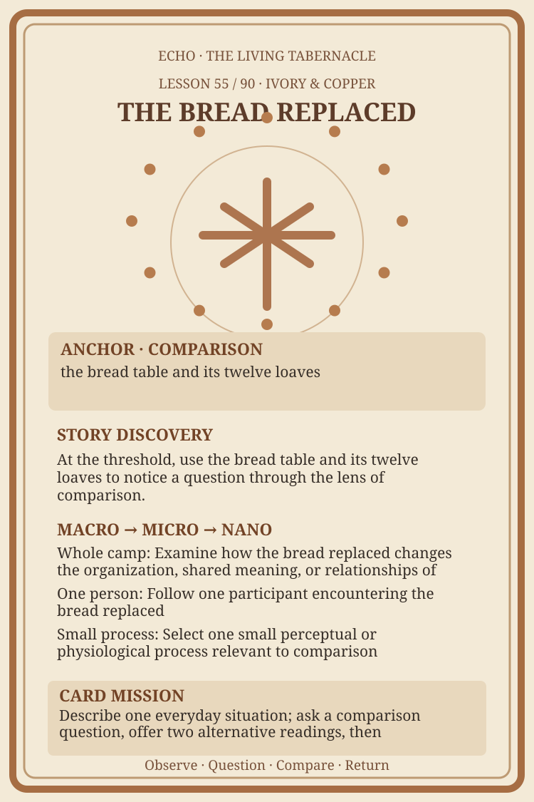
55. The Bread Replaced
Macro: Examine how the bread replaced changes the organization, shared meaning, or relationships of the whole encampment.
Micro: Follow one participant encountering the bread replaced; distinguish observed behavior from inferred feeling.
Nano: Select one small perceptual or physiological process relevant to comparison; label scientific claims separately from the ECHO analogy.
Evidence: Record what was directly observed, what was inferred, and what additional evidence could change the interpretation of the bread replaced.
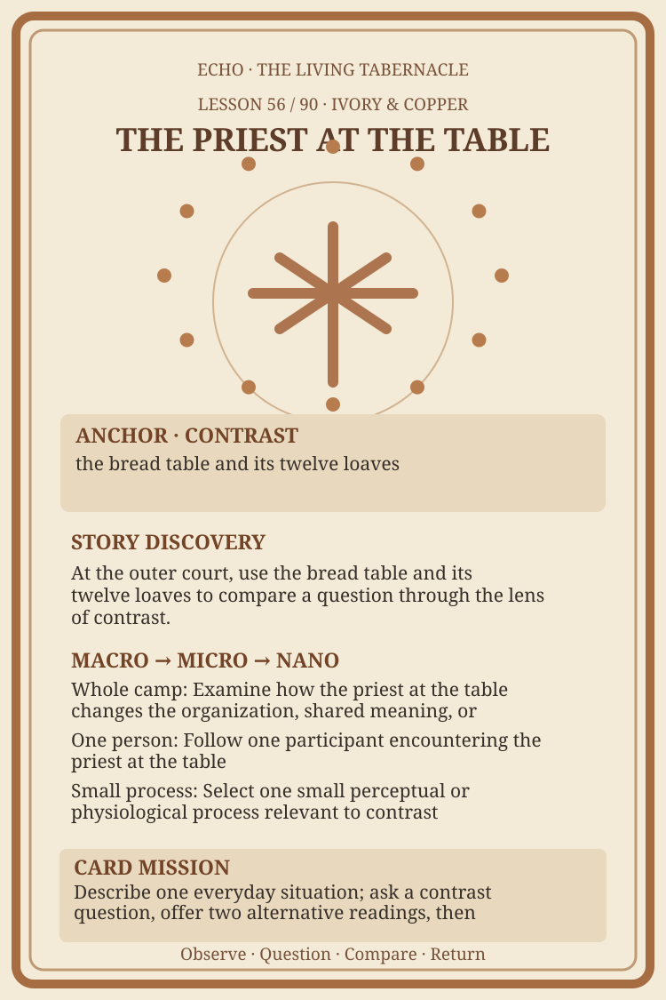
56. The Priest at the Table
Macro: Examine how the priest at the table changes the organization, shared meaning, or relationships of the whole encampment.
Micro: Follow one participant encountering the priest at the table; distinguish observed behavior from inferred feeling.
Nano: Select one small perceptual or physiological process relevant to contrast; label scientific claims separately from the ECHO analogy.
Evidence: Record what was directly observed, what was inferred, and what additional evidence could change the interpretation of the priest at the table.
57. The Almond Blossom
Macro: Examine how the almond blossom changes the organization, shared meaning, or relationships of the whole encampment.
Micro: Follow one participant encountering the almond blossom; distinguish observed behavior from inferred feeling.
Nano: Select one small perceptual or physiological process relevant to causal hypothesis; label scientific claims separately from the ECHO analogy.
Evidence: Record what was directly observed, what was inferred, and what additional evidence could change the interpretation of the almond blossom.
58. The Branching Cup
Macro: Examine how the branching cup changes the organization, shared meaning, or relationships of the whole encampment.
Micro: Follow one participant encountering the branching cup; distinguish observed behavior from inferred feeling.
Nano: Select one small perceptual or physiological process relevant to alternative explanation; label scientific claims separately from the ECHO analogy.
Evidence: Record what was directly observed, what was inferred, and what additional evidence could change the interpretation of the branching cup.
59. Seven Flames, Twelve Lenses
Macro: Examine how seven flames, twelve lenses changes the organization, shared meaning, or relationships of the whole encampment.
Micro: Follow one participant encountering seven flames, twelve lenses; distinguish observed behavior from inferred feeling.
Nano: Select one small perceptual or physiological process relevant to consequence; label scientific claims separately from the ECHO analogy.
Evidence: Record what was directly observed, what was inferred, and what additional evidence could change the interpretation of seven flames, twelve lenses.
60. The Observation Lamp
Macro: Examine how the observation lamp changes the organization, shared meaning, or relationships of the whole encampment.
Micro: Follow one participant encountering the observation lamp; distinguish observed behavior from inferred feeling.
Nano: Select one small perceptual or physiological process relevant to integration; label scientific claims separately from the ECHO analogy.
Evidence: Record what was directly observed, what was inferred, and what additional evidence could change the interpretation of the observation lamp.
61. The Memory Lamp
Macro: Examine how the memory lamp changes the organization, shared meaning, or relationships of the whole encampment.
Micro: Follow one participant encountering the memory lamp; distinguish observed behavior from inferred feeling.
Nano: Select one small perceptual or physiological process relevant to observation; label scientific claims separately from the ECHO analogy.
Evidence: Record what was directly observed, what was inferred, and what additional evidence could change the interpretation of the memory lamp.
62. The Emotion Lamp
Macro: Examine how the emotion lamp changes the organization, shared meaning, or relationships of the whole encampment.
Micro: Follow one participant encountering the emotion lamp; distinguish observed behavior from inferred feeling.
Nano: Select one small perceptual or physiological process relevant to sensory detail; label scientific claims separately from the ECHO analogy.
Evidence: Record what was directly observed, what was inferred, and what additional evidence could change the interpretation of the emotion lamp.
63. The Assumption Lamp
Macro: Examine how the assumption lamp changes the organization, shared meaning, or relationships of the whole encampment.
Micro: Follow one participant encountering the assumption lamp; distinguish observed behavior from inferred feeling.
Nano: Select one small perceptual or physiological process relevant to emotion; label scientific claims separately from the ECHO analogy.
Evidence: Record what was directly observed, what was inferred, and what additional evidence could change the interpretation of the assumption lamp.
64. The Comparison Lamp
Macro: Examine how the comparison lamp changes the organization, shared meaning, or relationships of the whole encampment.
Micro: Follow one participant encountering the comparison lamp; distinguish observed behavior from inferred feeling.
Nano: Select one small perceptual or physiological process relevant to memory; label scientific claims separately from the ECHO analogy.
Evidence: Record what was directly observed, what was inferred, and what additional evidence could change the interpretation of the comparison lamp.
65. The Alternative Lamp
Macro: Examine how the alternative lamp changes the organization, shared meaning, or relationships of the whole encampment.
Micro: Follow one participant encountering the alternative lamp; distinguish observed behavior from inferred feeling.
Nano: Select one small perceptual or physiological process relevant to expectation; label scientific claims separately from the ECHO analogy.
Evidence: Record what was directly observed, what was inferred, and what additional evidence could change the interpretation of the alternative lamp.
66. The Integration Lamp
Macro: Examine how the integration lamp changes the organization, shared meaning, or relationships of the whole encampment.
Micro: Follow one participant encountering the integration lamp; distinguish observed behavior from inferred feeling.
Nano: Select one small perceptual or physiological process relevant to assumption; label scientific claims separately from the ECHO analogy.
Evidence: Record what was directly observed, what was inferred, and what additional evidence could change the interpretation of the integration lamp.
67. The Twelve Loaves
Macro: Examine how the twelve loaves changes the organization, shared meaning, or relationships of the whole encampment.
Micro: Follow one participant encountering the twelve loaves; distinguish observed behavior from inferred feeling.
Nano: Select one small perceptual or physiological process relevant to comparison; label scientific claims separately from the ECHO analogy.
Evidence: Record what was directly observed, what was inferred, and what additional evidence could change the interpretation of the twelve loaves.
68. The Nourishment Path
Macro: Examine how the nourishment path changes the organization, shared meaning, or relationships of the whole encampment.
Micro: Follow one participant encountering the nourishment path; distinguish observed behavior from inferred feeling.
Nano: Select one small perceptual or physiological process relevant to contrast; label scientific claims separately from the ECHO analogy.
Evidence: Record what was directly observed, what was inferred, and what additional evidence could change the interpretation of the nourishment path.
69. The Whole Encampment
Macro: Examine how the whole encampment changes the organization, shared meaning, or relationships of the whole encampment.
Micro: Follow one participant encountering the whole encampment; distinguish observed behavior from inferred feeling.
Nano: Select one small perceptual or physiological process relevant to causal hypothesis; label scientific claims separately from the ECHO analogy.
Evidence: Record what was directly observed, what was inferred, and what additional evidence could change the interpretation of the whole encampment.
70. The Individual Journey
Macro: Examine how the individual journey changes the organization, shared meaning, or relationships of the whole encampment.
Micro: Follow one participant encountering the individual journey; distinguish observed behavior from inferred feeling.
Nano: Select one small perceptual or physiological process relevant to alternative explanation; label scientific claims separately from the ECHO analogy.
Evidence: Record what was directly observed, what was inferred, and what additional evidence could change the interpretation of the individual journey.
71. The Cellular Question
Macro: Examine how the cellular question changes the organization, shared meaning, or relationships of the whole encampment.
Micro: Follow one participant encountering the cellular question; distinguish observed behavior from inferred feeling.
Nano: Select one small perceptual or physiological process relevant to consequence; label scientific claims separately from the ECHO analogy.
Evidence: Record what was directly observed, what was inferred, and what additional evidence could change the interpretation of the cellular question.
72. The Stair of Scale
Macro: Examine how the stair of scale changes the organization, shared meaning, or relationships of the whole encampment.
Micro: Follow one participant encountering the stair of scale; distinguish observed behavior from inferred feeling.
Nano: Select one small perceptual or physiological process relevant to integration; label scientific claims separately from the ECHO analogy.
Evidence: Record what was directly observed, what was inferred, and what additional evidence could change the interpretation of the stair of scale.
73. The Return Marker
Macro: Examine how the return marker changes the organization, shared meaning, or relationships of the whole encampment.
Micro: Follow one participant encountering the return marker; distinguish observed behavior from inferred feeling.
Nano: Select one small perceptual or physiological process relevant to observation; label scientific claims separately from the ECHO analogy.
Evidence: Record what was directly observed, what was inferred, and what additional evidence could change the interpretation of the return marker.
74. The Dream Journal
Macro: Examine how the dream journal changes the organization, shared meaning, or relationships of the whole encampment.
Micro: Follow one participant encountering the dream journal; distinguish observed behavior from inferred feeling.
Nano: Select one small perceptual or physiological process relevant to sensory detail; label scientific claims separately from the ECHO analogy.
Evidence: Record what was directly observed, what was inferred, and what additional evidence could change the interpretation of the dream journal.
75. The Waking Landmark
Macro: Examine how the waking landmark changes the organization, shared meaning, or relationships of the whole encampment.
Micro: Follow one participant encountering the waking landmark; distinguish observed behavior from inferred feeling.
Nano: Select one small perceptual or physiological process relevant to emotion; label scientific claims separately from the ECHO analogy.
Evidence: Record what was directly observed, what was inferred, and what additional evidence could change the interpretation of the waking landmark.
76. The Safe Exit
Macro: Examine how the safe exit changes the organization, shared meaning, or relationships of the whole encampment.
Micro: Follow one participant encountering the safe exit; distinguish observed behavior from inferred feeling.
Nano: Select one small perceptual or physiological process relevant to memory; label scientific claims separately from the ECHO analogy.
Evidence: Record what was directly observed, what was inferred, and what additional evidence could change the interpretation of the safe exit.
77. The Unknown Visitor
Macro: Examine how the unknown visitor changes the organization, shared meaning, or relationships of the whole encampment.
Micro: Follow one participant encountering the unknown visitor; distinguish observed behavior from inferred feeling.
Nano: Select one small perceptual or physiological process relevant to expectation; label scientific claims separately from the ECHO analogy.
Evidence: Record what was directly observed, what was inferred, and what additional evidence could change the interpretation of the unknown visitor.
78. The Nested Family
Macro: Examine how the nested family changes the organization, shared meaning, or relationships of the whole encampment.
Micro: Follow one participant encountering the nested family; distinguish observed behavior from inferred feeling.
Nano: Select one small perceptual or physiological process relevant to assumption; label scientific claims separately from the ECHO analogy.
Evidence: Record what was directly observed, what was inferred, and what additional evidence could change the interpretation of the nested family.
79. The Empathy Test
Macro: Examine how the empathy test changes the organization, shared meaning, or relationships of the whole encampment.
Micro: Follow one participant encountering the empathy test; distinguish observed behavior from inferred feeling.
Nano: Select one small perceptual or physiological process relevant to comparison; label scientific claims separately from the ECHO analogy.
Evidence: Record what was directly observed, what was inferred, and what additional evidence could change the interpretation of the empathy test.
80. The Evidence Ledger
Macro: Examine how the evidence ledger changes the organization, shared meaning, or relationships of the whole encampment.
Micro: Follow one participant encountering the evidence ledger; distinguish observed behavior from inferred feeling.
Nano: Select one small perceptual or physiological process relevant to contrast; label scientific claims separately from the ECHO analogy.
Evidence: Record what was directly observed, what was inferred, and what additional evidence could change the interpretation of the evidence ledger.
81. The Hypothesis Room
Macro: Examine how the hypothesis room changes the organization, shared meaning, or relationships of the whole encampment.
Micro: Follow one participant encountering the hypothesis room; distinguish observed behavior from inferred feeling.
Nano: Select one small perceptual or physiological process relevant to causal hypothesis; label scientific claims separately from the ECHO analogy.
Evidence: Record what was directly observed, what was inferred, and what additional evidence could change the interpretation of the hypothesis room.
82. The Correction Door
Macro: Examine how the correction door changes the organization, shared meaning, or relationships of the whole encampment.
Micro: Follow one participant encountering the correction door; distinguish observed behavior from inferred feeling.
Nano: Select one small perceptual or physiological process relevant to alternative explanation; label scientific claims separately from the ECHO analogy.
Evidence: Record what was directly observed, what was inferred, and what additional evidence could change the interpretation of the correction door.
83. The Repeated Pattern
Macro: Examine how the repeated pattern changes the organization, shared meaning, or relationships of the whole encampment.
Micro: Follow one participant encountering the repeated pattern; distinguish observed behavior from inferred feeling.
Nano: Select one small perceptual or physiological process relevant to consequence; label scientific claims separately from the ECHO analogy.
Evidence: Record what was directly observed, what was inferred, and what additional evidence could change the interpretation of the repeated pattern.
84. The Missing Detail
Macro: Examine how the missing detail changes the organization, shared meaning, or relationships of the whole encampment.
Micro: Follow one participant encountering the missing detail; distinguish observed behavior from inferred feeling.
Nano: Select one small perceptual or physiological process relevant to integration; label scientific claims separately from the ECHO analogy.
Evidence: Record what was directly observed, what was inferred, and what additional evidence could change the interpretation of the missing detail.
85. The Collaborative Architect
Macro: Examine how the collaborative architect changes the organization, shared meaning, or relationships of the whole encampment.
Micro: Follow one participant encountering the collaborative architect; distinguish observed behavior from inferred feeling.
Nano: Select one small perceptual or physiological process relevant to observation; label scientific claims separately from the ECHO analogy.
Evidence: Record what was directly observed, what was inferred, and what additional evidence could change the interpretation of the collaborative architect.
86. The Model and the Mind
Macro: Examine how the model and the mind changes the organization, shared meaning, or relationships of the whole encampment.
Micro: Follow one participant encountering the model and the mind; distinguish observed behavior from inferred feeling.
Nano: Select one small perceptual or physiological process relevant to sensory detail; label scientific claims separately from the ECHO analogy.
Evidence: Record what was directly observed, what was inferred, and what additional evidence could change the interpretation of the model and the mind.
87. The Study Design
Macro: Examine how the study design changes the organization, shared meaning, or relationships of the whole encampment.
Micro: Follow one participant encountering the study design; distinguish observed behavior from inferred feeling.
Nano: Select one small perceptual or physiological process relevant to emotion; label scientific claims separately from the ECHO analogy.
Evidence: Record what was directly observed, what was inferred, and what additional evidence could change the interpretation of the study design.
88. The Ethical Boundary
Macro: Examine how the ethical boundary changes the organization, shared meaning, or relationships of the whole encampment.
Micro: Follow one participant encountering the ethical boundary; distinguish observed behavior from inferred feeling.
Nano: Select one small perceptual or physiological process relevant to memory; label scientific claims separately from the ECHO analogy.
Evidence: Record what was directly observed, what was inferred, and what additional evidence could change the interpretation of the ethical boundary.
89. The Final Return
Macro: Examine how the final return changes the organization, shared meaning, or relationships of the whole encampment.
Micro: Follow one participant encountering the final return; distinguish observed behavior from inferred feeling.
Nano: Select one small perceptual or physiological process relevant to expectation; label scientific claims separately from the ECHO analogy.
Evidence: Record what was directly observed, what was inferred, and what additional evidence could change the interpretation of the final return.
90. The Living Manual
Macro: Examine how the living manual changes the organization, shared meaning, or relationships of the whole encampment.
Micro: Follow one participant encountering the living manual; distinguish observed behavior from inferred feeling.
Nano: Select one small perceptual or physiological process relevant to assumption; label scientific claims separately from the ECHO analogy.
Evidence: Record what was directly observed, what was inferred, and what additional evidence could change the interpretation of the living manual.